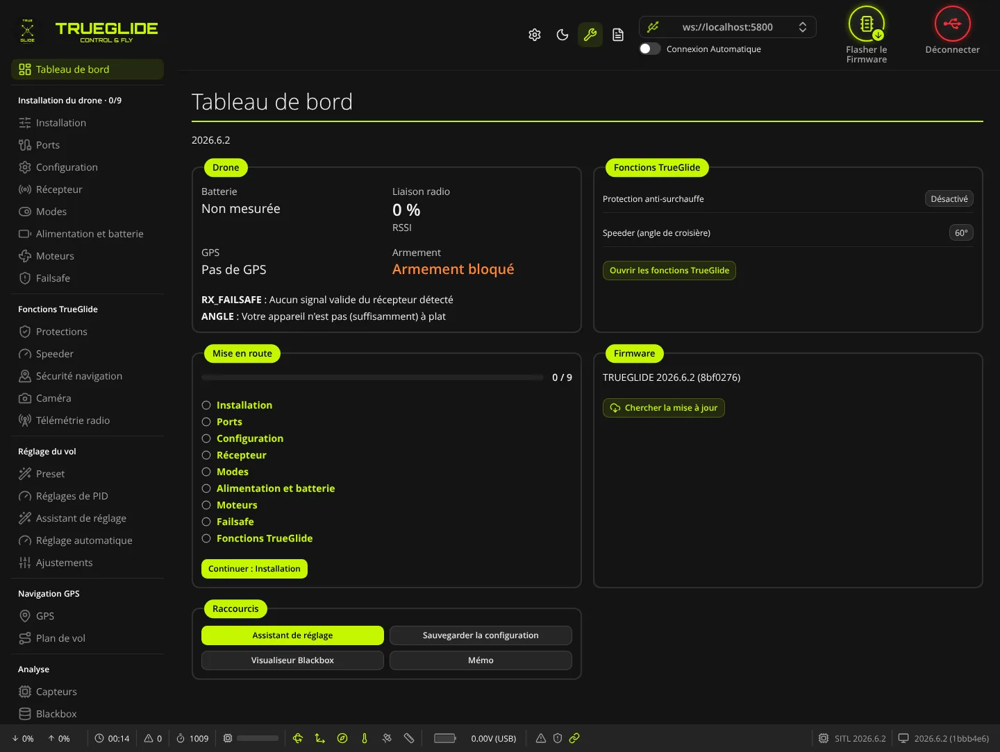
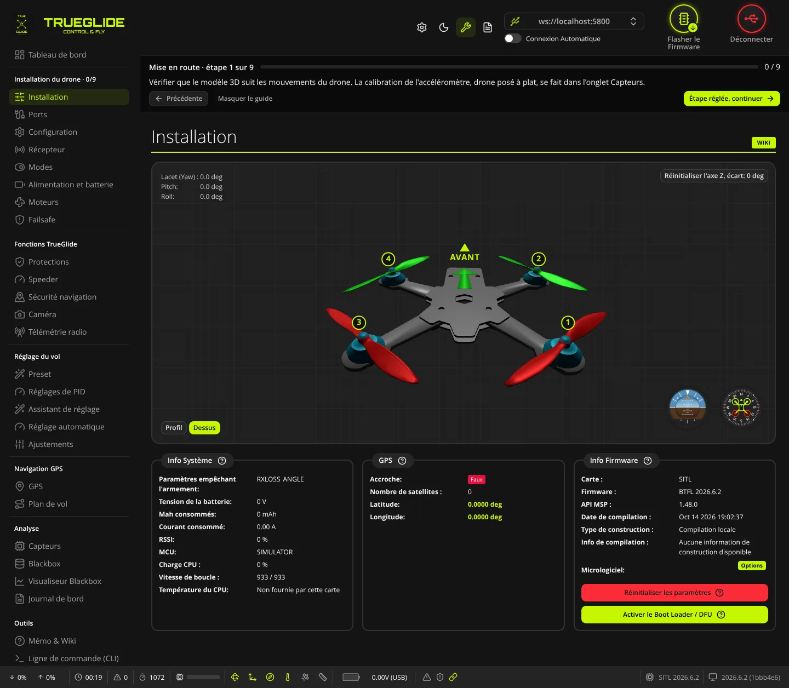
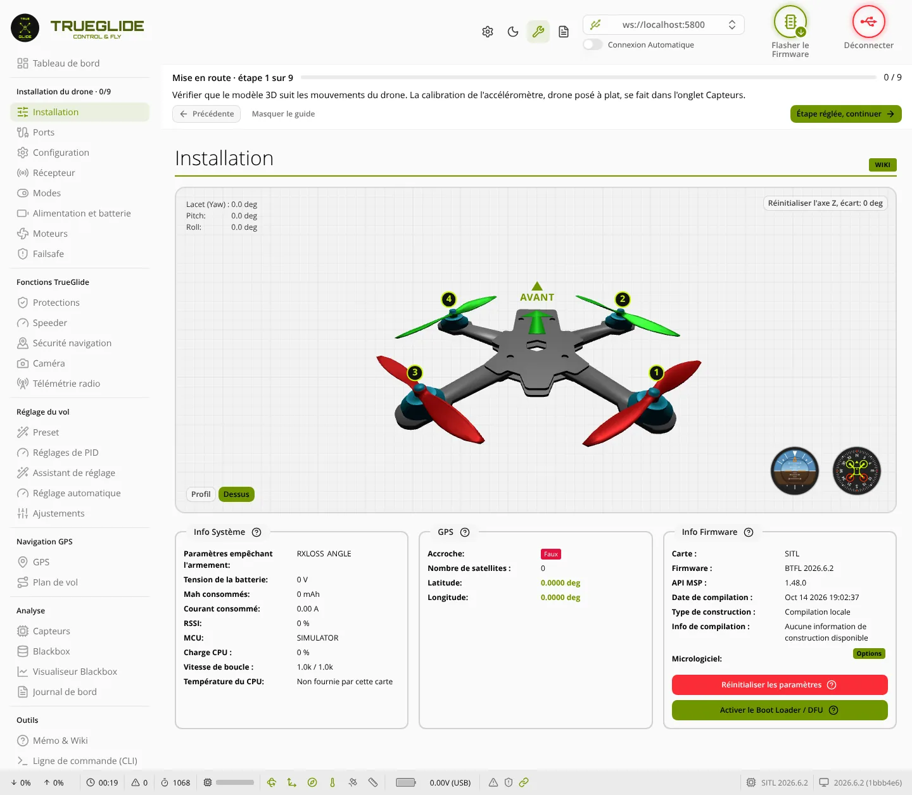
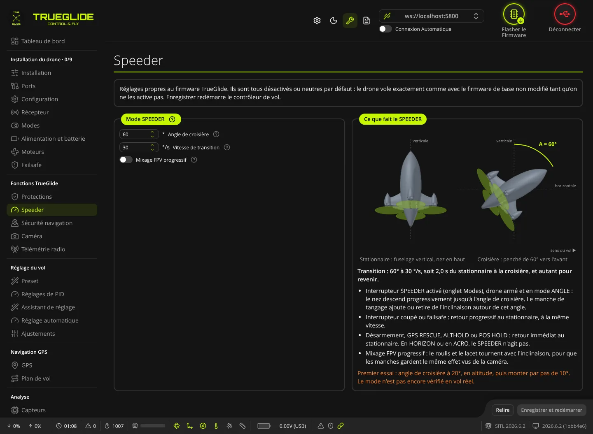
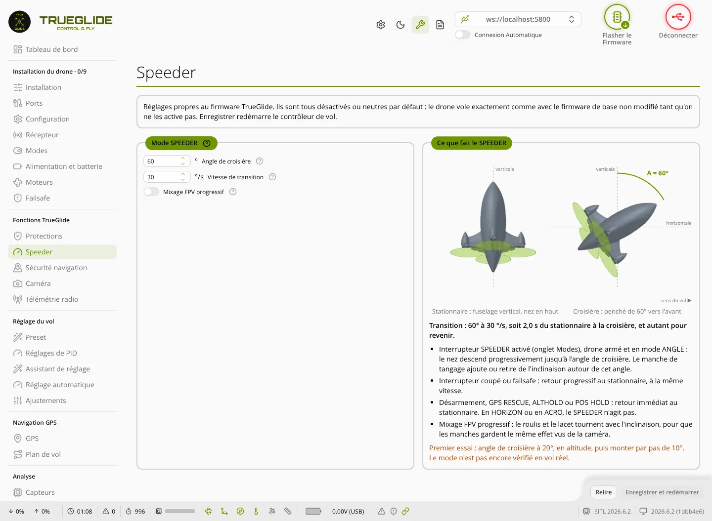
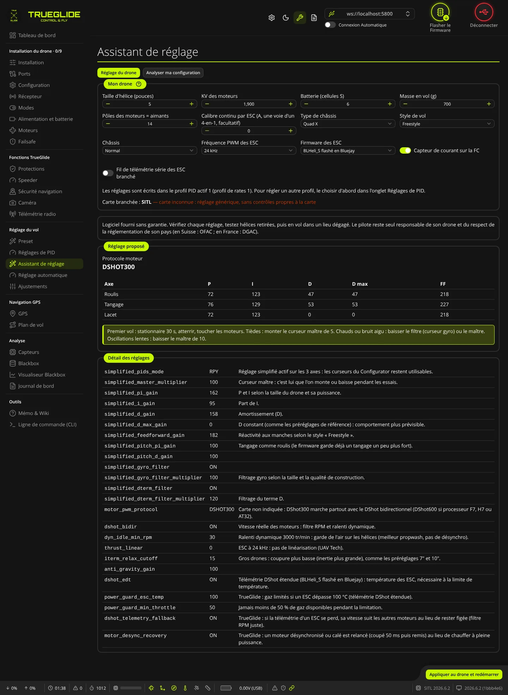
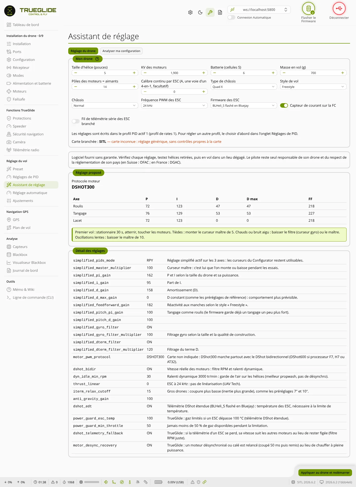
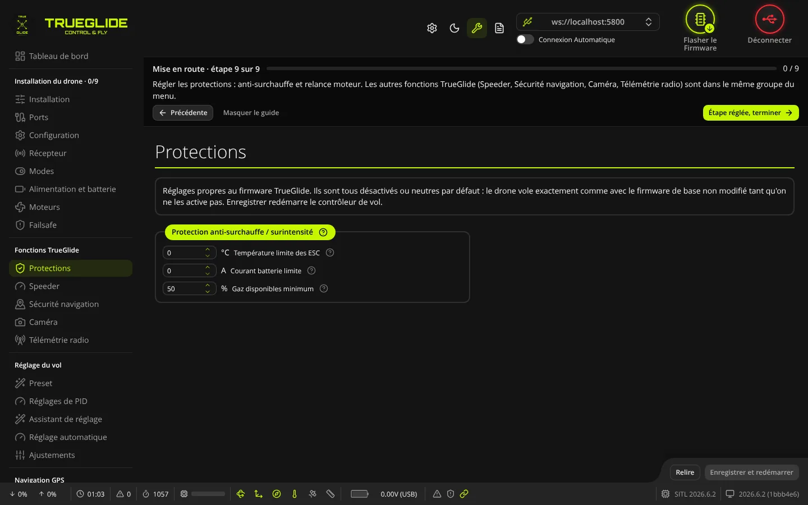
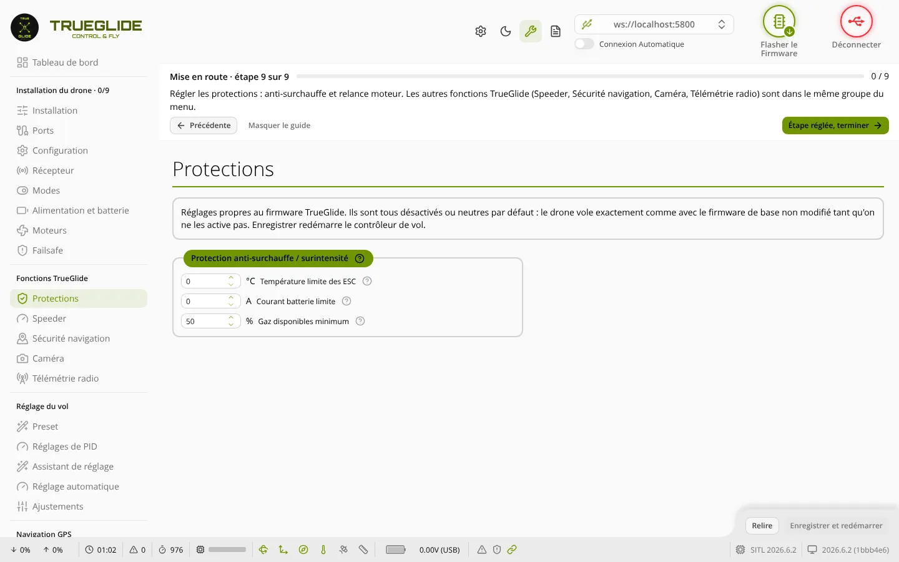

TRUEGLIDE est un firmware de contrôleur de vol basé sur Betaflight 2026.6.2. Il ajoute une protection contre la surchauffe, la relance des moteurs, le mode SPEEDER et, dans TRUENAV, les missions GPS. Sans réglage, il vole exactement comme Betaflight. Le logiciel TrueGlide Configurator le règle en français.

Tout est désactivé par défaut : chaque ajout ne fait rien tant qu'on ne l'active pas. Les chiffres ci-dessous sont lus dans le code ou mesurés ; aucun n'est encore mesuré en vol réel.
Limite les gaz si un ESC chauffe trop ou si le courant de la batterie dépasse une limite. Les corrections PID ne sont jamais limitées.
Pour les speeders qui décollent fuselage vertical : le nez descend progressivement jusqu'à l'angle de croisière, en mode ANGLE.
Relance un moteur désynchronisé ou calé, et garde une vitesse juste pour le filtre RPM quand la télémétrie DShot se perd.
Missions par points, maintien d'altitude et de position, retour à la maison, zone de vol, missions envoyées par MAVLink.
TRUEGLIDE se compile pour les cartes de Betaflight. Les firmwares publiés s'installent depuis le logiciel, avec contrôle de l'empreinte.
TrueGlide Configurator : mise en route guidée, assistant de réglage, onglets TrueGlide, et une page de documentation par onglet.
TrueGlide Configurator s'ouvre dans Chrome ou Edge, sans rien installer. Captures du vrai logiciel, connecté au simulateur.








Avant de flasher, sauvegarder la configuration de la carte : diff all et dump all dans l'onglet CLI.
.hex.diff all.Chaque étape est notée avec son résultat. Aucun vol réel n'a encore été fait.
Une page par onglet du logiciel, dans l'ordre du menu.
Des produits séparés, qui travaillent ensemble. La sécurité est le maître mot de chacun.
Le firmware de vol, avec ses modèles TRUENAV (navigation GPS) et TRUENAV_LIGHT. Tout ajout est désactivé par défaut.
Le logiciel de réglage, en français, dans le navigateur : mise en route guidée, assistant de réglage, onglets TrueGlide.
Pour régler et flasher les ESC Bluejay, BLHeli_S et AM32 par la carte de vol. Logiciel séparé, libre (licence AGPL v3), dérivé d'ESC Configurator.
Préparer un drone sans le brancher : réglage de départ, ports, contrôle des broches, fichier drone, puis commandes à coller dans le CLI.
Le configurateur pour concevoir son drone avant de le construire : composants, vitesse, poussée et autonomie estimées. Une étude XRIG s'ouvre dans TRUEGLIDE STUDIO pour préparer le réglage.
La gamme avancée, pour aller plus loin : plus de réglages et plus de fonctions, dont l'analyse des journaux Blackbox. Produit séparé de TRUEGLIDE.
 TRUE
TRUE